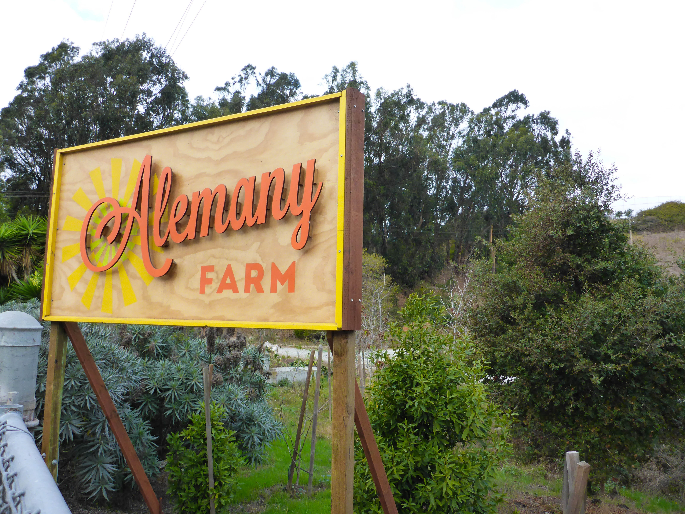

Environmental Education
The farm introduces children and adults to local food production and encourages people to build gardening skills they can use at home.
Friends of Alemany Farm manages the horticulture, volunteer, and education programs at a 3.5 acre organic farm ecosystem in southeast San Francisco.

Alemany Farm strengthens food security while teaching local residents how to grow food and care for urban ecological systems.
The farm introduces children and adults to local food production and encourages people to build gardening skills they can use at home.
Organic produce is shared freely with neighbors, volunteers, The Free Farm Stand, and partner groups.
Community members build leadership and job skills through urban agriculture, teamwork, and shared responsibility.

The farm sits on the unceded ancestral homeland of the Ramaytush Ohlone peoples. Today it continues to be a space for food growing, environmental learning, and community partnership.
Friends of Alemany Farm is a project of Earth Island Institute, a 501(c)(3) nonprofit organization.
Alemany Farm works with neighbors, volunteers, schools, and local organizations. Partners highlighted on the farm's site include the San Francisco Recreation and Parks Department, The Free Farm Stand, Urban Sprouts, and the San Francisco Beekeepers Association.